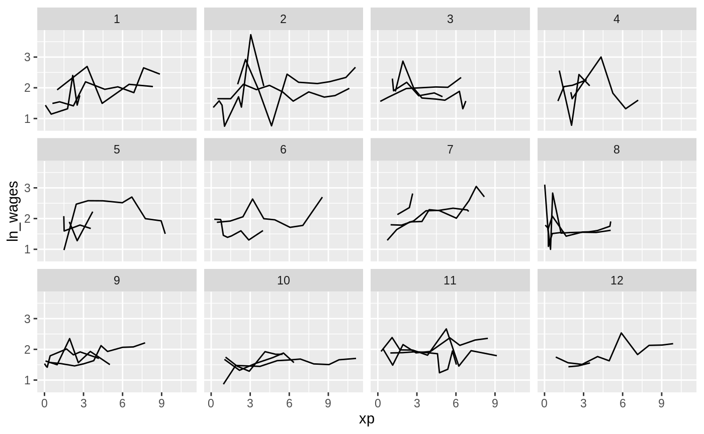
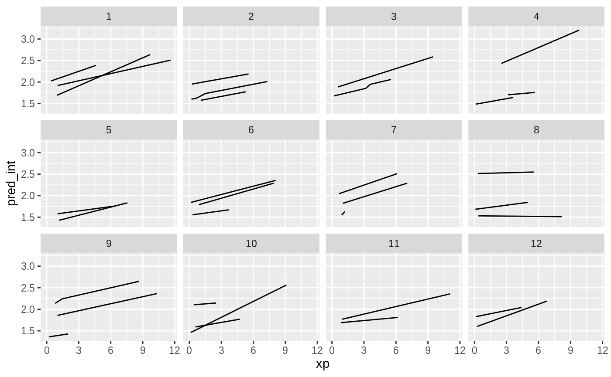
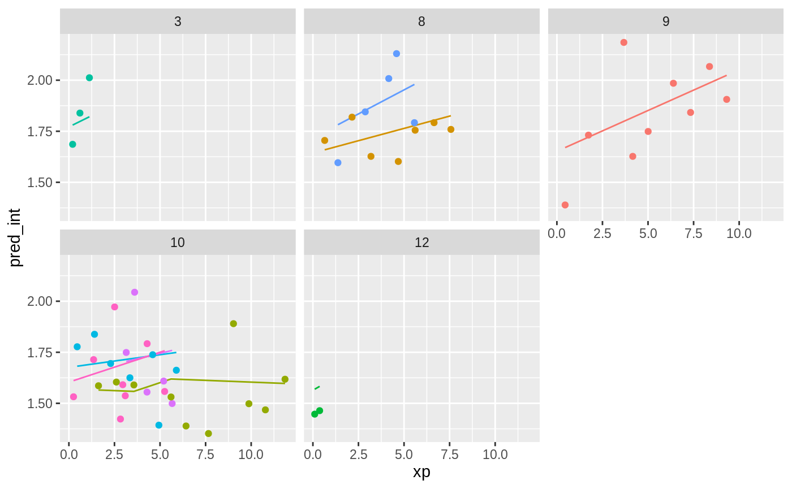

Using brolgar to understand Mixed Effects Models
mixed-effects-models.Rmdlibrary(brolgar)
library(lme4)
#> Loading required package: Matrix
library(modelr)
#>
#> Attaching package: 'modelr'
#> The following object is masked from 'package:brolgar':
#>
#> heights
library(ggplot2)Just as it is important to explore your data before modelling, it is important to explore your data after you fit a model, and during the modelling process.
Let’s take our wages data
wages
#> # A tsibble: 6,402 x 9 [!]
#> # Key: id [888]
#> id ln_wages xp ged xp_since_ged black hispanic high_grade
#> <int> <dbl> <dbl> <int> <dbl> <int> <int> <int>
#> 1 31 1.49 0.015 1 0.015 0 1 8
#> 2 31 1.43 0.715 1 0.715 0 1 8
#> 3 31 1.47 1.73 1 1.73 0 1 8
#> 4 31 1.75 2.77 1 2.77 0 1 8
#> 5 31 1.93 3.93 1 3.93 0 1 8
#> 6 31 1.71 4.95 1 4.95 0 1 8
#> 7 31 2.09 5.96 1 5.96 0 1 8
#> 8 31 2.13 6.98 1 6.98 0 1 8
#> 9 36 1.98 0.315 1 0.315 0 0 9
#> 10 36 1.80 0.983 1 0.983 0 0 9
#> # … with 6,392 more rows, and 1 more variable: unemploy_rate <dbl>Ugh. Spaghetti plot.
Let’s look at a random sample of people.

So let’s fit a model where we look at the impact of xp and ged, and fit an intercept for each individual.
We can use the tools from modelr to add predictions and residuals to the data
wages_aug <- wages %>%
add_predictions(wages_fit_int, var = "pred_int") %>%
add_residuals(wages_fit_int, var = "res_int")Now let’s look at the predictions over xp
Ugh. Straight spaghetti. Let’s sample that.

Now let’s add in the data to the predictions.
wages_aug %>%
sample_n_keys(size = 9) %>%
ggplot(aes(x = xp,
y = pred_int,
group = id,
colour = factor(id))) +
geom_line() +
geom_point(aes(x = xp,
y = ln_wages,
colour = factor(id))) +
facet_wrap(~id) +
theme(legend.position = "none")And let’s add some confidence bands
What if we grabbed a sample of those who have the best, middle, and worst residuals?
summary(wages_aug$res_int)
#> Min. 1st Qu. Median Mean 3rd Qu. Max.
#> -1.292083 -0.160424 -0.009309 0.000000 0.135568 2.162910We can use keys_near() to help with this
wages_aug_near <- wages_aug %>%
keys_near(key = id,
var = res_int)
#> Warning: Outer names are only allowed for unnamed scalar atomic inputs
wages_aug_near
#> # A tibble: 6 x 5
#> id res_int stat stat_value stat_diff
#> <int> <dbl> <fct> <dbl> <dbl>
#> 1 122 -1.29 min -1.29 0
#> 2 145 -0.160 q_25 -0.160 0.0000152
#> 3 253 -0.00939 med -0.00931 0.0000771
#> 4 10414 -0.00923 med -0.00931 0.0000771
#> 5 12226 0.136 q_75 0.136 0.00000332
#> 6 735 2.16 max 2.16 0This shows us the id’s where we the residuals match closest to the five number summary.
We can plot this data by joining it back to the wages data with predictions, to see what the spread of predictions is like.
library(dplyr)
#>
#> Attaching package: 'dplyr'
#> The following objects are masked from 'package:stats':
#>
#> filter, lag
#> The following objects are masked from 'package:base':
#>
#> intersect, setdiff, setequal, union
left_join(wages_aug_near,
wages_aug,
by = "id") %>%
ggplot(aes(x = xp,
y = pred_int,
group = id,
colour = stat)) +
geom_line() +
geom_point(aes(y = ln_wages)) +
facet_wrap(~id)
# can we stratify_along to group things by the worst fits?
wages_aug %>%
stratify_keys(n_strata = 12,
along = res_int) %>%
sample_n_keys(size = 9) %>%
ggplot(aes(x = xp,
y = pred_int,
group = id,
colour = factor(id))) +
geom_line() +
geom_point(aes(x = xp,
y = ln_wages,
colour = factor(id))) +
facet_wrap(~.strata) +
theme(legend.position = "none")
#> geom_path: Each group consists of only one observation. Do you need to
#> adjust the group aesthetic?